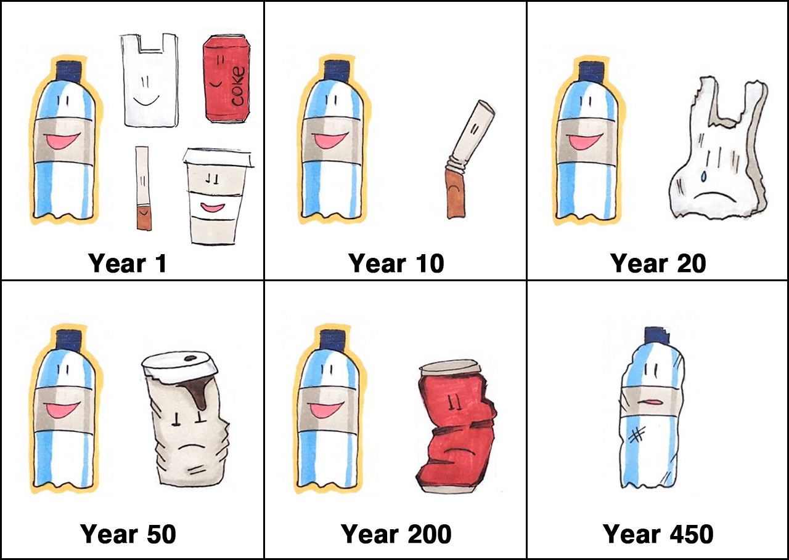

HELLO THERE,
I'm AP.
A recycled plastic bottle on a mission.
When I came to life in this recycled new body, I didn't find many bottles like me around. That's why I decided to help people recycle, so that more bottles like me can exist.
Help me out!
1 million plastic bottles are purchased every minute around the world!
According to research published in Science Advances journal, only 20% of produced plastic is recycled.
What does that mean?
That 80% of the plastic ends up discarded or incinerated. Here's what a discarded plastic bottle looks like after more than 400 years:
Can you even imagine laying around for more than 400 years without absolutely nothing to do?
That makes me terribly sad and that's why I want to change the fate of all plastic in the world.
Join me in my mission!
Learn about recycling and how to live a more sustainable life!
And last but not least, throw all the plastic bottles you use in the right bin and help create more recycled bottles like me. The more APs, the better.